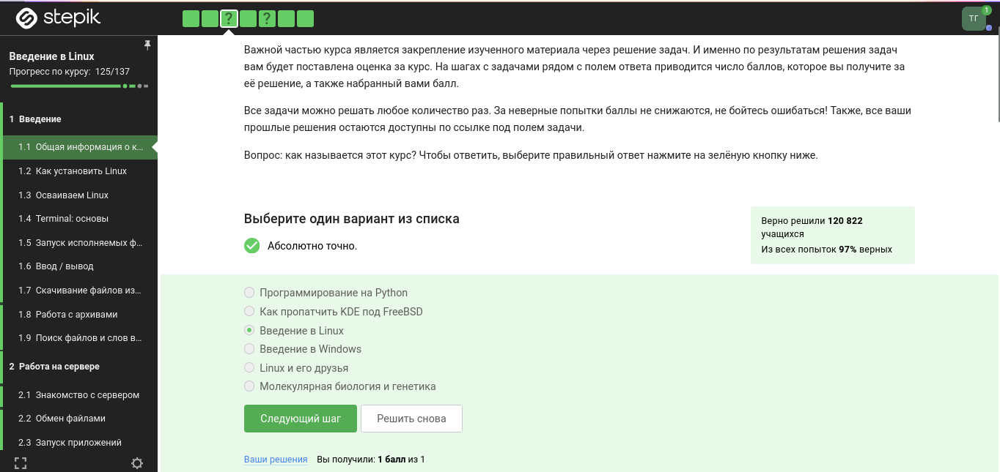
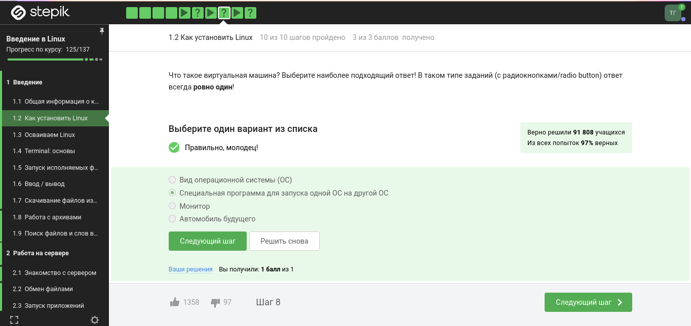
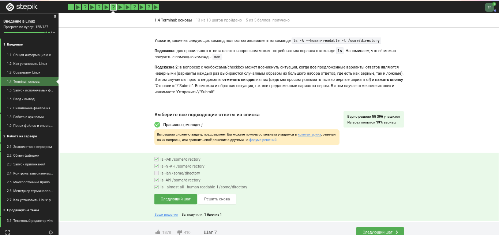
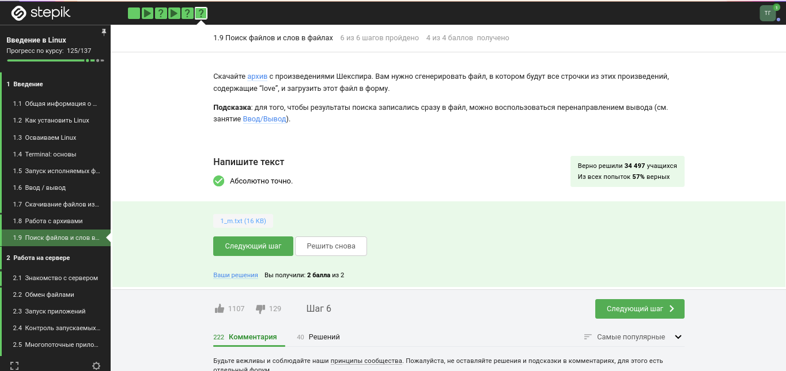

Цель и задание
Цель работы
Ознакомиться с функционалом операционной системы Linux.
Задание
- Просмотреть видео курса «Введение в Linux»
- На основе полученной информации пройти тестовые задания
Теоретическое введение
Что такое Linux
- Семейство Unix-подобных операционных систем на базе ядра Linux
- Включает утилиты и программы проекта GNU
- Создаётся и распространяется по модели свободного ПО
- Распространяется бесплатно в виде различных дистрибутивов
Выполнение — Основы системы
Задание 1–2. Знакомство с
курсом

Задание 1
- Курс называется «Введение в Linux»
- Изучены критерии прохождения курса
Задание 3–4.
Операционные системы и VirtualBox

Задание 4
- Стандартная ОС большинства магазинов — Windows
- VirtualBox позволяет запускать одну ОС внутри другой
Задание 5–6.
Виртуальная машина и работа с файлами
- Виртуальная машина успешно запускает Linux
- Документ создан и прикреплён к курсу в нужном формате
Задание 7. Формат пакетов
deb
- deb — формат пакетов проекта Debian
- Используется также в Ubuntu, Knoppix и других производных
Выполнение — Командная строка
Задание 11–12.
Регистрозависимость

Задание 12
- Интерфейс командной строки Linux
регистрозависим
- Команда с заглавной буквой ≠ команда со строчной
Задание 13–14. Навигация и
удаление
- Для перехода в другую директорию — указывается полный путь
rm -r — удаление директории и всех файлов внутри
рекурсивно
Задание 16–17. Фоновый режим
& в конце команды — запуск программы в
фоновом режиме
Задание 19.
Операторы перенаправления потоков
| Оператор |
Действие |
< file |
Файл как источник stdin |
> file |
stdout в файл (перезапись) |
>> file |
stdout в файл (дозапись) |
2> file |
stderr в файл |
&> file |
stdout и stderr в файл |
Выполнение — Утилиты
Задание 22. Флаги wget
-q / --quiet — отключить вывод wget-P — указать папку для сохранения-O — задать имя сохраняемого файла
Задание 25–26. Архивирование
- gzip (GNU Zip) — утилита сжатия, алгоритм
Deflate
- Флаги
tar:
c — создать архивj — использовать bzip2f — работа с файловой системой
Задание 28–29. Команда grep

Задание 29
- Поиск с учётом регистра по умолчанию
grep -r "love" ~/Shakespeare/ > 1_m.txt —
рекурсивный поиск с сохранением результата
Выводы
Выводы
- Пройден 1 этап курса «Введение в Linux»
- Освежены навыки работы с архивами и утилитой wget
- Закреплены навыки работы с grep и перенаправлением потоков